10 ”All built and rigged the same” – the invention of the one design class
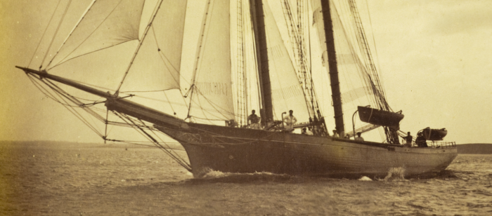
In the 1880s, the wealthy summer visitors to the town of North Haven in Maine in the north-eastern US started to race a mixed class of small dinghies that they bought or hired from the locals. At first the boats that raced on the cold, misty waters of Penobscot Bay, nestled between the coast of Maine and the low-lying Fox Islands, were probably just the usual assortment of little sail-and-oar boats that were popping up in many similar harbours. Almost all the sources provide contradictory information about exactly what happened next, but it seems that in 1884 the big black schooner Gitana entered North Haven carrying in her davits a boat that heralded a change in the entire sport of sailing.
Gitana was owned by William F Weld, one of the extremely wealthy Weld brothers, big-boat owners and scions of a rich shipping family from Boston. The Welds were obviously interested in boat design; Dr Charles G Weld sponsored naval architecture research at MIT and his alma mater Harvard for years, while William was one of the syndicate that paid for Puritan, the 1885 America’s Cup defender that cemented the arrival of the compromise cutter.
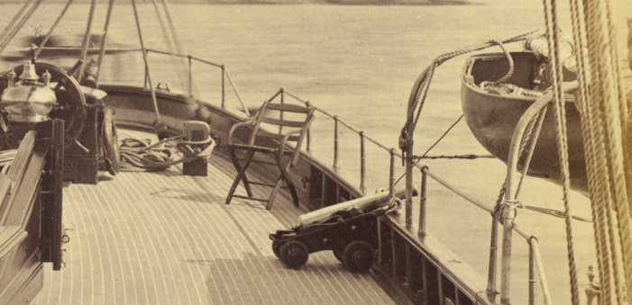
It’s said that when Gitana’s new tender proved to be faster than the existing boats, the sailors and boatbuilders of North Haven started to build new boats. It was a story that was probably as old as sailboat racing – but the way it happened in North Haven was almost unique at the time. Someone, some time, somehow decided that the new boats would all be the same design as Gitana’s tender, and what may be the earliest one design class was born. An old MotorBoaTing magazine article claims that Dr Charles G Weld “turned out a fleet” in 1884 with local boatbuilder William H Brown, whose family boatbuilding firm survives today. Several accounts say that while Gitana’s dinghy arrived in 1884, it wasn’t until August 1887 that the class had its first official event. 1 Whether or not the North Haven Dinghy was actually the first boat to be built or to race as a one design class will probably never be known – as we’ll see, there were two other boats with very good claims to the same honour – but the wealthy and conservative summer visitors have been racing boats built to the same design ever since, making the North Haven Dinghy the oldest one design to survive basically unchanged since it was created.
With its hollow bow lines, prominent deadwood, 350lb/160kg of ballast and curved buttock lines the North Haven Dinghy is a floating time capsule and a classic example of the early type of oar-and-sail dinghy. Today Charles G Weld’s position at the front of the fleet is sometimes taken by Cam Lewis, Finn and Laser champion and famous pro sailor best known as the skipper of the giant carbon fibre catamaran “Team Adventure” in The Race around the world, but the boat remains almost unchanged from the slender lines of her hollow bow to her curvaceous transom. “The NH Dinghy was the boat that I started racing in and spent most of my younger years playing in” Lewis recalled in an email to me. “It’s quite an amazing boat today and was even more fun to sail back when the fleet was all wood and so many more kids sailed them. These boats taught me lots; independence was the best, I could do something myself, accomplish goals and have a ball doing it. By the time I was 10 or 11 I was out racing by myself and winning races in the midget fleet. We raced in the mornings on Mondays and Saturdays, when light air was the norm, so being light was fast. When the breeze got up to 8 knots, though, a crew was handy.”
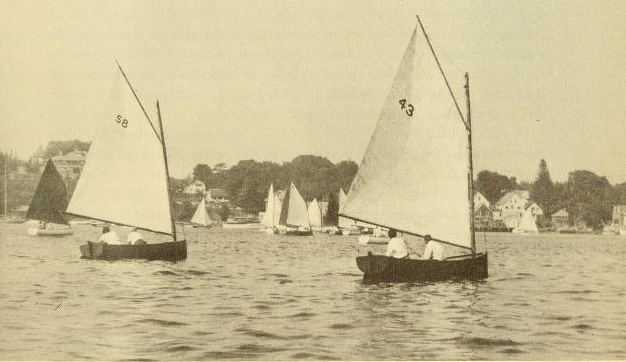
“The boats themselves are very responsive to wind strength changes and are actually pretty tippy. The lead ballast saves the boat from being too unstable, and few capsizes happen as with only one sail and lots of cold water, the sheet usually gets eased out once the leeward gunwale is under. These boats ghost along in light winds, they do not leap out of the water in puffs, but with the narrow waterlines and mass they coast very well. The big transom hung rudders do not take much to change course and tacking and jibing are best done slowly through a nice arched radius; a fast turn is slow as rudder drag is huge if turned hard.”
“The old wooden boats suffered from the demise of good wood boat builders and old boats not being cared for. The mast being so far forward puts huge loads on the hull and only a headstay is rigged to counter upwind main sheet loads, so there are big side loads and twisting of the hulls when two are hiking out against a full powered main. In the end of my wooden boat days in the NH dinghies (I started to restore my favorite old boat called Runaway, sail #2, but lost it in a fire), the crew had a lot of pumping to do to keep the boat afloat in breezy races where the seams were opening and the waves and spray come onboard; especially off the breeze as these boats do not get up and plane, but sink lower and lower as they are serious displacement boats.”
“It would be fun to sail them without ballast in a big breeze, but I have never tried. The North Haven is not much like a Finn, yet when you have one sail and a cat boat rig, many similarities are there, and any sailing I did in a NH dinghy helped me in my Laser and Finn racing days.”
The Welds must have caught onto a wave, because two other pioneer one designs were formed at the same time as the North Haven Dinghy class. It was through Ewan Kennedy’s excellent scottishboating blog that I became aware of an almost contemporary class of three stout 19ft one-design keelboats owned by the Clyde Canoe Club, which were launched around August 1887. 2 Whether they and their later sisters raced as a one design class, as such, seems to be unknown.
But the Clyde Canoe Club boats and the North Haven Dinghy seem to have almost no effect on the wider sailing scene. The CCC boats seem to have died out early, while the North Haven Dinghy raced only in its obscure home waters. The first evidence of the class that may perhaps have been the first one design and was certainly the major early promoter of the ideal was a letter from Dublin sailor Thomas B Middleton in September 1886 in the Irish Times.
Middleton had been sailing one of the Norwegian “praam” dinghies of the Shankhill Corinthian Sailing Club. They raced under a rating system, used shallow keels and stone ballast, and were understandably hard to tack, so when Middleton saw a centreboard made from boilerplate in Scotland he fitted one to his own praam, Cemiostomia. But although Middleton was involved in a local development class, he was also aware of the excesses of the contemporary rating rules and the damage created by the depreciation and expense that they created.
Although Middleton’s letter proposed a new class of centreboard dinghies, his concept went much further than just a new design of boat. He proposed “a class of sailing punts, with centreboards all built and rigged the same, so that an even harbour race may be had with a light rowing and generally useful boat…”. He did not want to just build a new dinghy, but to encourage “the promotion of amateur seamanship and racing in boats similar as regards size, lines and sail area, where the contest shall be one of skill”.
A circular promoting the class and probably written by Middleton conceded that “the fleet will not have the speed of the clippers of the Dublin Bay Sailing Club, yet speed is only found by comparison, and as all boats will be the same, a true and most exciting race will ensure, a race where every boat will have the same chance…a race that will be a contest of the crew and not one of designers and sailmakers.” Here was the one-design vision fully formed and clearly expressed.
The design that Middleton later created became famous as the first Water Wag; a name that referred not just to birds but also to “wags” as in boisterous young men. Like so many other craft it was shaped by its location, but Middleton’s writings indicate that pratical issues and economy rated highly. The Water Wag was designed for Shankhill in Dublin, where there was (to quote Dixon Kemp) “a shingly beach open to the surf of the Irish Channel, and where the boats have to be beached and carried up often by only two men, and where ballast is consequentially inadmissable”. A rather unusual looking boat, it was a 13ft long double-ended centreboarder that Middleton described as “the smallest possible sailing boat…of a useful and pretty double-bowed Scotch model, with a good beam… strongly built of yellow pine with teak fittings.” It used a 75 sq ft lug sail cut by Lapthorn, a leading sailmaker of the time.
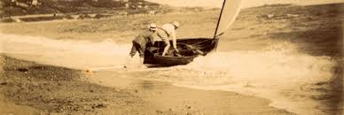
The first Water Wag was built in Scotland by the firm that built the CCC one designs. As the Water Wag class and Ewen Kennedy both speculate, this may indicate a possible Celtic link with the CCC boats and the genesis of the one design concept. Class racing started around May 1887 with a class association – perhaps the first in the entire sport – formed the same year. In an era where many classes were ruled by clubs or regional associations, the Water Wags were “democratic in their ideas” Middleton wrote. The committee was elected from “the keenest racers and most serviceable men to the club” and “social position, politics and religion are inadmissible considerations”; not the norm for Ireland and other countries at the time.
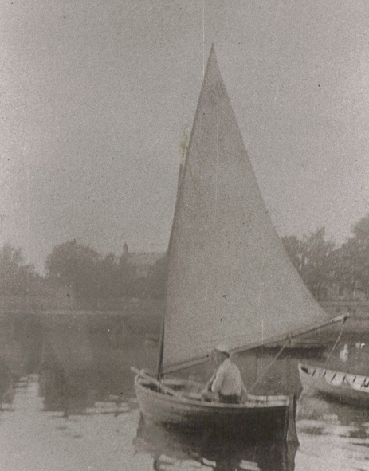
The class caught on quickly, but within a few years owners started to find a way around the rules. In 1894 two light cedar-planked Water Wags were built and showed better performance than the larch or pine boats. The club tightened the rules, but by the end of the decades new boats were costing 45 pounds each – three times the cost of the first boats – and people were moving to newer classes. By 1899 although the fleet was still strong, it was said that “in some way or other there was no life in the sailing” and as a cure the Water Wags replaced the double enders with a new design from the yard of local builder James E Doyle. A conventional 14ft transom stern clinker sloop, the new design was quite similar to the rowing boats built by Doyle. An archetypal example of the classic early dinghy, it was “a much more powerful and able type than the existing Wag..the square stern will make her much more roomy” and it was hoped that with the addition of a spinnaker and jib “the increase in sail will give the ‘crew’ something more to do.” The class also introduced tighter class rules to “to reduce the cost of building new boats, and to ensure greater control over construction” and brought the price down to 18 pounds.
The tale of the early Water Wag shows that even at the dawn of one designs both the perils and pluses of the concept had to be understood and controlled. Although the change to the new design helped the Water Wag to survive to the present day, it means that it is the oldest one-design class but not the oldest one-design boat.
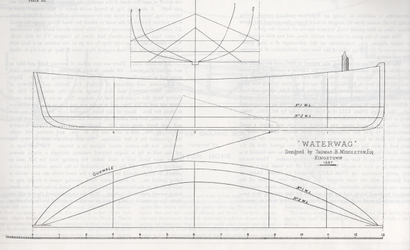
Despite the new boat, the Water Wag class kept the most important part of Middleton’s ideal – the one design concept. “This class is the germ of the one model class, and has well carried out its original objects, viz., restrictions on the advantage of a long purse; preservation of the selling value of the boat and the combination of a serviceable and racing boat” noted Kemp. The economy of the concept was proven when Middleton’s original Eva, the first Wag ever built, was sold for more than her original cost when she was 16 years old.
The fact that the CCC class, the North Haven Dinghies and the Water Wags emerged almost simultaneously indicates that the one-design concept was probably becoming obvious to a significant number of people, but the presence of the Water Wag in the strong sailing scene of Dublin and Middleton’s clear and strong promotion of the concept made the Irish class by far the most influential of the early one design classes. It may also have been an early example of another trend – while development classes create breakthroughs in design, the moderate one designs often create breakthroughs in racing concepts and in bringing sailing to new audiences. Although the fleet sometimes dwindled to as few as four starters in the 1980s, in recent years the Water Wag’s home fleet as been achieving record numbers and boats more than a century old are still racing – a tribute to the appeal of the concept that Middleton and the other early Wags fought for.
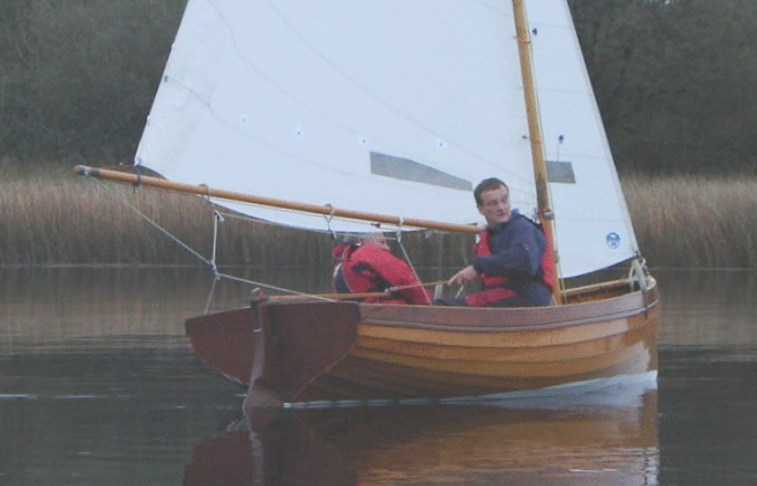
Even after the Water Wag popularised the concept, many sailors thought that one designs were inherently doomed to a short life. “The average life of such little classes was two to three years” said George Elder, one of the first leaders of the International Star class, about the local one designs that sprung up in the Water Wag’s wake. “After the first flush of enthusiasm,which seldom lasted beyond the first season, the class began to break up. One skipper won most of the races, which was natural enough, and the tail enders became disgusted and sold their boats….every one-design class gradually began to dwindle after the first year.”
Like the North Haven Dinghy, the Water Wag proved that such thinking was completely wrong. But even when the Water Wags and similar classes showed that one design classes could survive in the long term, even the greatest designers believed that the very nature of one designs meant that they were restricted to a small geographic area. Morgan Giles, who was to become one of the first designers to move from dinghy success to big-boat design, echoed the conventional wisdom of his age when he wrote that one designs were “naturally inclined to show traces of having been designed to meet the peculiar conditions obtaining in their immediate locality (in addition, perhaps, to the personal whims of the local enthusiast who more often than not is responsible for starting such a class), and as the fundamental principles of the one-design scheme absolutely prevent any alteration, improvement, or bringing up to date of the boats, it stands to reason that one design classes must generally be numerically weak and of purely local interest.”
The same line of thought extended to the USA, where Star class pioneer George W Elder wrote that “the idea seemed to be that each club must have a distinctive one-design class of its own, a boat especially designed for its particular weather conditions and different from any other one-design class. In other words a one-design class was considered a strictly local proposition and the private property of a given club. That was fine for the designers, but it isolated every group of small boat skippers and prevented them, as well as the clubs, from having any interests in common.”
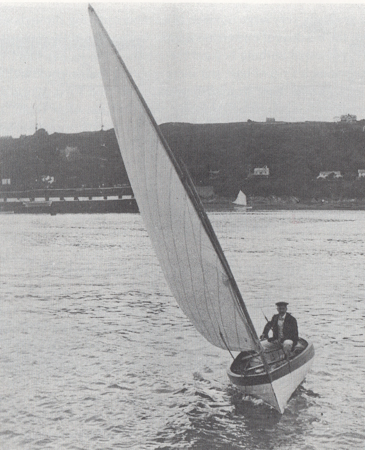
Ironically, it was classes from one particularly unusual area that broke that pattern. The International Star has claimed to have been the first one design to spread widely, and the International 14 has claimed to be the first international dinghy class. But in truth two designs from Southport, just north of Liverpool, had achieved both those goals before the Star had even formed a national body, and before the International 14 had even been born.
Southport is located about 30km north of the river where Truant had reintroduced the centerboard to England. Almost directly across the Irish Sea is Dublin where the Water Wags had made the one design concept popular, and 100km to the north-east is Peggy’s home on the Isle of Man. For such a small corner the world, this little triangle has had a significant influence on early centerboard sailing. It’s hard to see what made this region such a force, because the Irish Sea presents a harsh area for dinghy sailing. Towns like Southport and the resorts of the Wirral Peninsula to the west of Liverpool present an almost unique sailing environment. When the four to 10 m tides run out the waters retreat a mile or more from the land, leaving acres of flat empty damp sand behind. The Choppy waves blow up easily under the influence of the fast-running currents and the blustery winds that come off the Irish Sea. But even the harshest of conditions cannot stop the English from sailing. They moored yachts in isolated patches of deeper water like the “Bog Hole” off Southport, or built small centreboard half-decked yachts that were tough enough to handle bouncing on the sandbanks as the tide rose and fell. In the late 1800s, the emerging domestic tourism market led several seaside towns in the area to create several “marine lakes”; small (14 to 52 acre) artificial ponds along the high-tide mark that provided a safe place for sailing dinghies and pedal boats when the tide went out or the Irish Sea became too dangerous.
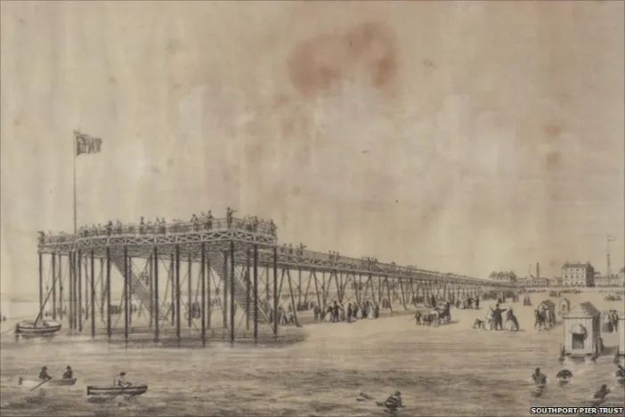
Despite these handicaps, Southport created two breakthrough one designs. Although he was personally a wealthy man, the merchant and amateur designer Scott Hayward designed two small centerboard half-decked yachts that suited what West Lancashire YC historian Roger Ryan called the “prosperous but not necessarily wealthy” middle class who were moving into sailing. The smaller of the two, the 20ft Seabird Half Rater of 1898 (co-designed with Herbert Baggs on a cigarette packet under a streetlamp after midnight, according to legend) has survived and thrived until the present day, apparently because of its emphasis on economy and the rigid one-design rules.
The Seabird seems to have been the first boat to break the old rule that one designs must be “numerically weak and of purely local interest” Fleets were soon started in Scotland and Northern Ireland, and by 1902 17 entries raced in a week-long “international” series and had a formal association. The Star, the first official International yacht class, didn’t achieve anything similar until after World War One and although expatriates later developed Water Wag fleets in Asia there was no formal organisation or inter-fleet racing.
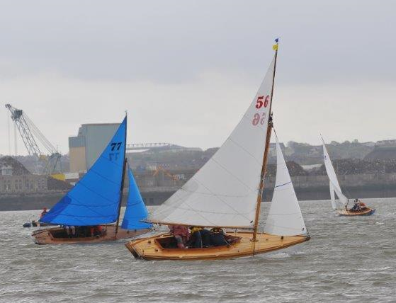
A few years before the Seabird was designed, a class of 12 footers designed by boatbuilder G.H. Wilmer as yacht dinghies had been formed into a one design racing class by the Southport Corinthian Yacht Club (the local “big boat” club). Within a few years the town’s newer “small boat” club, the West Lancashire YC, had adopted the SCYC one design and then turned it into a restricted class, as well as creating a restricted class of 10 foot singlehanders.
Folkard’s book Sailing Boats includes sketches that allow us to make a comparison between the original one design 12 footers and Scott Hayward’s Slut, which he designed to the restricted class rules. The one designs show the hallmarks of a typical yacht tender of their day – a wineglass transom and a vee-shaped hull to allow easy rowing. Slut, which was not only enormously successful (she won over 100 races) but seaworthy enough to be sailed up and down the coast to regattas, was similar in rig and dimensions but had a noticeably fuller stern and softer bilges.
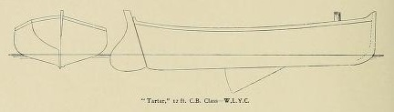
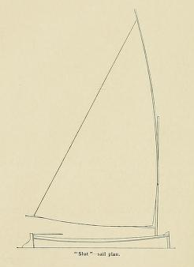
Despite the enthusiasm of men like Scott Hayward and its convenient communications with the city of Manchester, by the 1900s Southport sailing was in decline. As in so many other sailing centres in the Victorian era, development was the cause. Silting caused by a new shipping channel was gradually filling in the attractively-named “Bog Hole” patch of deeper water where keel yachts used to moor, and crowding and pollution prevented the club’s smaller boats from using the small marine lake on the seaside during the summer. But the sailors of Southport had plenty of experience with small boat design when in 1913 the Boat Racing Association”, a national body formed in reaction to the failure of the established Yacht Racing Association to cater for small craft, opened a competition for a “useful yacht’s centreboard dinghy” that could also be a one design racer.
The winning design was created by George Cockshott of Southport, like Scott Hayward an amateur designer, a member of both the “establishment” SCYC and the progressive WLYC and a sailor of big boats as well as small ones. Although Cockshott had already designed the WLYC’s Star Class, a cheap and tough one-design 16 foot half decker, we know nothing about his design philosophy or history. But looking at Southport’s sailing history and the shape of the International 12, it seems as if Cockshott may have taken the lessons of the earlier Southport classes, and blended them into a shape that would be stable and forgivng enough to work as a yacht tender. The International 12, like Slut, has fuller stern sections than the typical boat of her style and era, and it’s not hard to believe that the outstanding career of the Scott Hayward boat persuaded Cockshott to move away from the wineglass transom that was typical of the day. Compared to boats like the Water Wag or North Haven Dinghy, Cockshott’s design is further along the transition from a slim-lined rowing boat that can sail well into a flatter and more powerful sailing boat that can be rowed. This was a shape that wasn’t seen in classes like the International 14 until a decade or more later, and may have been key to allowing the 12 to maintain its popularity for over a century.
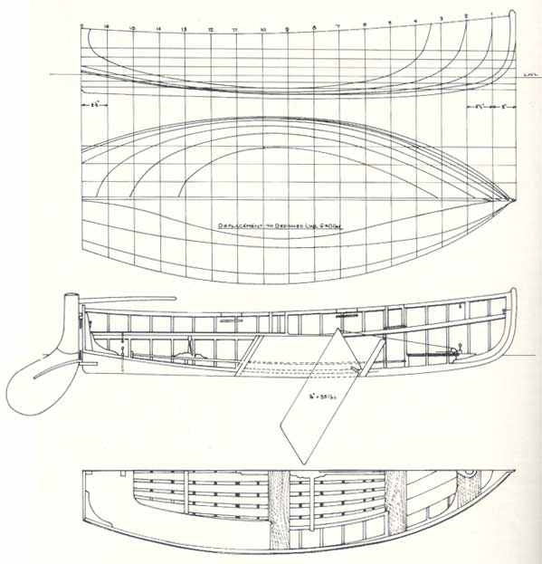
Cockshott’s experience as a big-boat sailor may perhaps have lead him to make the boat more suitable as a tender by giving it firm bilges and a flat midsection by the standards of the time, and a low-aspect lug rig that allowed for shorter spars that can stow within the hull. All this is, of course, pure speculation, but it what is not speculation is that the International 12 sprang from a town that already had a disproportionate amount of experience with dinghy design and class development.
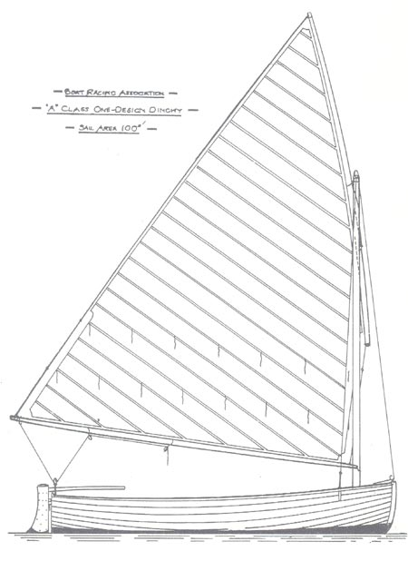
The International 12s (officially called the “BRA A Class”) had their first class race at West Kirby, west of Liverpool. Just like Southport, at low tide the West Kirby shoreline retreats over a nautical miles, leaving a huge expanse of flat sands to dry out. The dinghies normally sail on the 52 acre artificial Marine Lake along the high water mark. The West Kirby fleet of 12s is long gone, but when I visited at the end of 2015’s summer the fleet of Cockshott’s earlier Star class still sat on the sand at their moorings and dried out on the flat sands every tide. The chilly and gusty wind coming off the Irish Sea and past the Welsh coast was the same as it was in Cockshott’s day, and so was the remarkable British passion for dinghy racing. In most countries these conditions would make the area a dinghy racing wasteland, but West Kirby Sailing Club still has over 100 active dinghies and small yachts in its racing fleet and there are four other clubs within 30km/20 miles of coastline. On this cool afternoon when I stood watching the sailing (I’d have been afloat if anyone in the club had answered their emails….) the youth training squad was putting away their Lasers while a fleet of GP14s was racing on the Marine Lake – one of over a dozen classes that race on the 1km by 250m artificial pond.
In a symbol of the rampant nationalism of the times, the 12s of the West Kirby fleet were all named after battleships of the Royal Navy. It was a tragic portent. Within a year of the first race, World War One had broken out and the namesakes of the West Kirby 12s were forming battle lines in the North Sea. The war stunted the growth of the 12 in England, but it spurred the economy of the neutral Netherlands, and by 1920 there were hundreds of them afloat in the Low Countries. In 1919 the design was adopted by the International Yachting Racing Union (as ISAF was then known) as the first International one design class of any type, and the first International dinghy class. When Cockshott’s design was selected for the Olympics in the same year it was a symbol that dinghy sailing, for so long almost ignored by the major sailing bodies, had arrived.
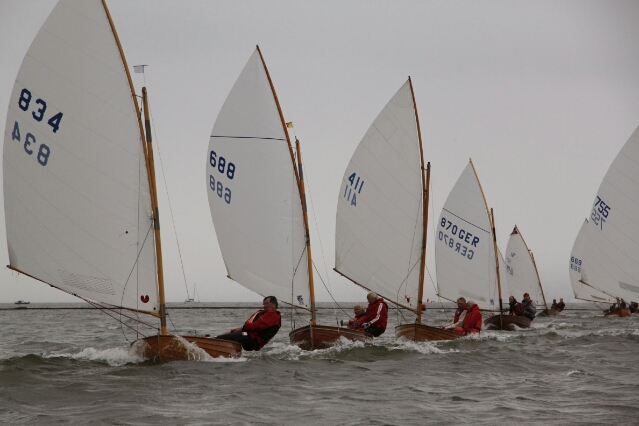
In truth, the Olympics of 1920 were a false dawn for Olympic dinghy sailing. Only two crews, sailing two-up in boats owned by the same man, competed. Because both crews were Dutch, the racing was moved from Belgium to the Netherlands mid-series, so the International 12’s Olympic debut became the only Olympic event to have ever taken place in two nations! At least the 12’s event was better than other dinghy event, in 18 footers. Only a single crew, the British, entered. They didn’t even have to sail to be awarded the win, and as a result they are absent from many official records.[1]
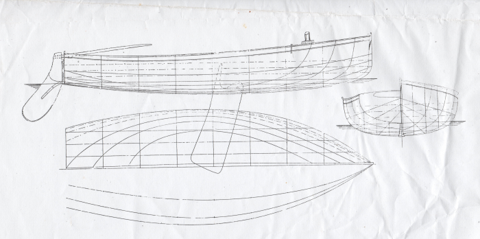
Even before the 1920 Olympics, some of the British had been complaining that the I-12 was outmoded, and Morgan Giles had prepared a replacement design that was said to be faster upwind, but perhaps harder to sail downwind. The strong existing fleets of Belgium and the Netherlands blocked the move, and today it seems apparent that they made the right choice. While hundreds of other classes have come along, changed with the times and vanished, the International 12 has survived, and recently it has thrived.
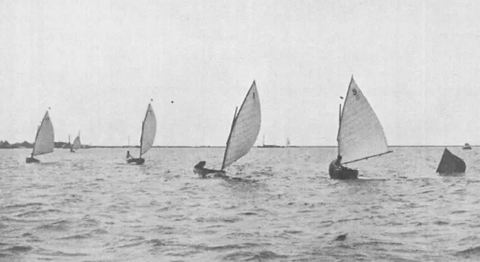
The 12 returned to the Games in 1928, in Belgium. This time it was a real contest, with a solid fleet of 20 countries, many of them complete with reserves. The 12s were supplied by the host country and it seems that three countries sailed doublehanded, which is still a common option among 12 Foot sailors. Swedish canoe expert Sven Thorell won gold from Robert of Norway and Broman of Finland. The Italian representative, Nirdio, took the class home with him and the Italian fleet became one of the world’s strongest. It was said that in the 1950s, Italian 12 Foot regattas sometimes drew more fans than football matches. By then the class was sailed in almost a dozen countries.
It was probably the sailors of the “low countries” who kept the International 12 alive long after its moments of Olympic glory had faded, and through the loss of popularity and official international status. The Japanese also kept on sailing 12s, and while the Italian fleet dwindled, it never quite died out. In the 1990s the Italian fleet became caught up in the classic boat revival, and it now counts over 100 active boats and has played a significant part in the class coming back to life in other European countries. The Dutch fleet includes 250 racers, with fleets of 50 to 60 for the national titles and 3 to 5 new boats hand-crafted in mahogany planking each year. The sailors are a diverse bunch; a recent national champion was aged 30 years, the oldest sailor 82.
Sadly, development has split the International 12 class. The Dutch remain committed to the original ideal of the 12; wooden hull, simple fittings, and the original m2 sail. The Italians have taken a different route. To reduce price they have adopted fiberglass hulls and alloy spars, with wooden decks and thwarts to keep the classic feel. They have also allowed modern fittings and increased the sail area to make the boat more exciting in light winds, and they stop racing if the breeze tops 16 knots. To confuse the issue further, the Italians now have a sub class just for wooden hulls, but with Italian rigs and fittings. Feelings are sadly running fairly high between the various camps, and no one seems to be able to see a way to re-unite the factions; the boat has come to mean different things in different nations. But there is still obviously a common love for the 12, and the class’ centenary event in 2013 attracted the huge fleet of 171 boats.
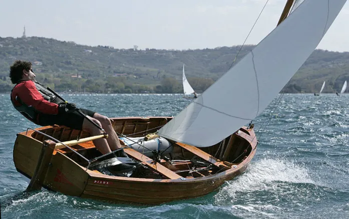
A few days after I had stood at West Kirby Sailing Club, site of the 12’s first fleet, I hopped aboard a modern 12 owned by the genial Enrico Zaffalon, who took over the manufacture of boats from the Bonaldo moulds when the original manufacturer retired. Like the International 12 itself, Enrico’s home club at Mestre is perched between traditional beauty and modernity; the club’s waters run between the container port and the spires of Venice across the lagoon. Centreboard sailing is not strong in Italy. Rather appropriately I had just come from racing in the Italian national titles for the 12ft long original Windsurfer, which is now reviving just as the 12 has done and for much the same reasons – with a poor economic outlook and a sailing scene that is struggling, people are moving to the biggest class they can find. Unless you want an Opti or Laser, says Enrico, the 12 the only class he can race and get a strong fleet to compete against. The simplicity and stability of Cockshott’s design also makes it a very convenient option; in the mild conditions of Venice’s lagoon Enrico can drive down to the club, rig quickly, launch and sail a 12 in street clothes and stay dry; perhaps a more important factor in fashion-conscious Italy than in other countries.
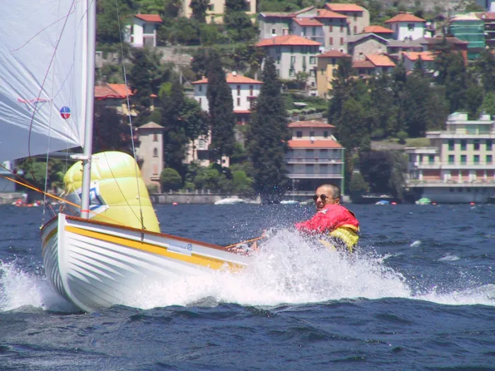
The day I sailed Enrico’s Bonaldo was perfect for the Italian version of the 12; a bright day with enough wind to get the boat to hull speed. After a few minutes, the joy of Cockshott’s little boat comes home. With that big rig the boat is responsive and interesting, but also easy to handle. You can drop the tiller and walk to the mast and she sits quietly beam-on to the breeze, like a yacht tender should. You can put her into irons (if you try) and then she simply drops off onto the right tack whenever you want. It’s a good demonstration of the virtues of the big, old-fashioned swept rudder. When you purposely sail her with the gunwale lapping the water she remains controllable both for heel and course, whether you are sailing upwind or rolling downwind by the lee, Laser-style.
The 12 is stable enough to be sailed by someone sitting inboard, but she can also be flicked around into roll tacks nicely (although rather more slowly than a modern boat, because of the skeg that allows it to work as a rowboat) if you’re feeling more physical. Unlike some traditional boats with narrower wineglass sterns and a steeper run aft she doesn’t drag a big sternwave or squat deeply as she picks up speed, but you can feel the drag build up as speed increases, just to remind you that this is a century-old design with its narrow stern and curved buttock lines, rather than a modern planing hull. However, it’s said that a 12, driven hard enough with modern materials and techniques, can plane in a big breeze.
With the modern rigging and fittings, such anathema to the Dutch, Enrico’s boat is an intriguing combination of classic grace and ease with the convenience of spectra and roller bearings. The dipping lug is a new experience for me. A line runs from the bottom of the lug yard back to gunwale. As you go into a tack you whack the windward line and the bottom of the lug is pulled aft and pops around the mast, so it will lie on the “new” leeward side once the tack is completed and not interfere with the sail shape. Of course, you can easily leave the yard on one side while you tack back and forth, with no noticeable loss of pace.
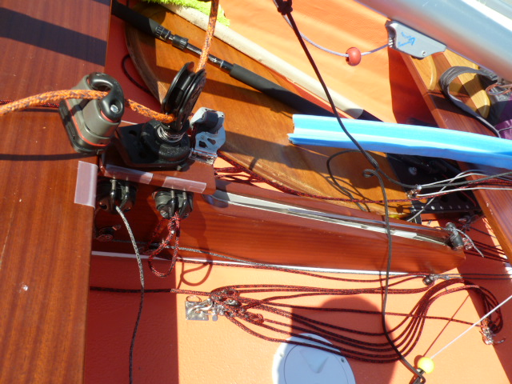
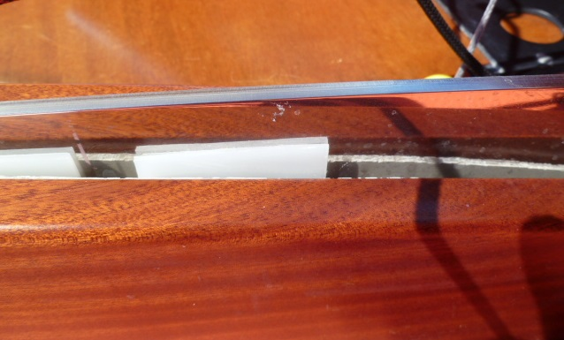
The 12 is a boat that would be a joy to sail whether roll tacking in a hot fleet or cruising across to Venice with a bottle of Chianti in the bilge. As I flick this remarkably docile but fun little boat around in the Italian sun, all I want to do is to keep on sailing and relaxing, sliding across the lagoon to Venice to pick up my wife and explore the canals of the world’s most beautiful city under oar and sail. The 12 is the sort of boat that does that to you. It’s with genuine regret that I have to turn down Enrico’s kind offer to race the boat in the nearby classic boat regatta the day we are due to fly home.
Fans of development classes often say that one-designs invariably become “obsolete” and die. The tale of the first one designs proves that nothing could be further from the truth. The oldest one-design class, the oldest one-design boat, and the oldest widespread one design are still active, many years after many contemporary restricted and rating classes have died. It seems that the great one design classes are eternal, not ephemeral.
“He had watched the excesses caused by rating rules and the damage that the depreciation and expense caused to the sport”:- Like much of the other information about the Water Wag, this comes from Middleton’s article “The Kingstown Water Wags” in Forest and Stream for May 19 1904↩︎
“A circular promoting the class and probably written by Middleton”:- From ‘Yachting in Ireland’ by Johnny Hooper, “The Dinghy Year Book 1962”, Richard Creagh-Osbourne (ed) p 87.↩︎